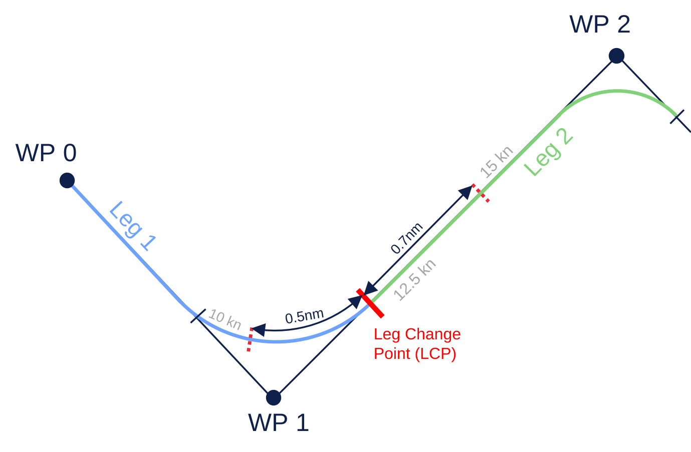
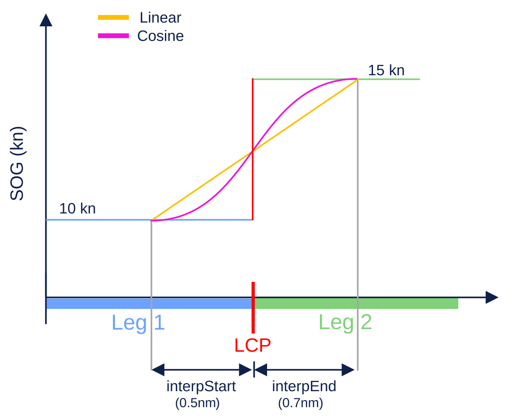

Trajectory
Trajectories for collision avoidance systems define planned paths with a precise spatial and temporal description.
Overview
A Trajectory describes the complete planned path of a vessel through space and time. Unlike simple route definitions, trajectories provide precise descriptions over both the vessel's position and speed at any point along the route, which is essential for precise collision avoidance maneuvers.
The trajectory specification in maritime-schema extends the RTZ (Route Exchange) standard by adding comprehensive speed profile capabilities. This allows you to define not just where a vessel will go, but exactly how fast it will travel at each segment of the journey, and how speed changes will occur between legs.
In addition to being used in the output of a collision avoidance system, trajectories can also be used in traffic situations to describe the motion of target vessels.
Structure
A trajectory consists of a series of waypoints, each containing:
- position: The geographic coordinates of the waypoint
- turnRadius: Defines the curve radius when turning at this waypoint (in nautical miles)
- leg: Contains speed data for the segment leading to the next waypoint
leg property
defines what happens between legs, including speed (SOG - Speed Over Ground)
and how that speed changes over the segment using interpolation methods.Example
Let's examine two consecutive waypoints that demonstrate different speed
profile configurations. Remember: each waypoint's leg property defines the segment leading to that waypoint from the
previous one.
Trajectory Structure
In this example trajectory:
- Leg 1 (WP0 → WP1): Defined by the
legproperty in WP1 - Leg 2 (WP1 → WP2): Defined by the
legproperty in WP2
The speed change from 10 knots to 15 knots happens between Leg 1, and Leg 2 and is set by the interpolation parameters in WP1 (Leg 1).
WP1
{
"position": {},
"turnRadius": 0.8,
"leg": {
"data": {
"sog": {
"value": 10,
"interpStart": 0.5,
"interpEnd": 0.7,
"interpMethod": "linear"
}
}
}
}WP1's leg property
defines Leg 1, maintaining a constant speed of 10 knots throughout. The interpolation values specify
that the speed change from the leg's original speed of 10 knots begins 0.5 nm before the end of Leg 1 and finishes 0.7 nm after the Leg
1, creating a smooth acceleration zone.
WP2
{
"position": {},
"turnRadius": 0.8,
"leg": {
"data": {
"sog": {
"value": 15,
"interpStart": null,
"interpEnd": null,
"interpMethod": null
}
}
}
}WP2's leg property
defines Leg 2. The target speed for this leg is 15 knots.


Speed Transition
The interpStart and interpEnd values
specify absolute distance positions along the leg in nautical miles:
- interpStart: Distance (nm) before the leg change point where speed transition begins
- interpEnd: Distance (nm) after the leg change point where speed transition completes
Null values: When both interpStart and interpEnd are null, there is no speed transition; the vessel maintains constant speed throughout the entire leg.
Zero value: Setting interpStart and interpEnd to zero indicates an instantaneous speed change at the waypoint, with no transition zone. For vessels, this is physically impossible.
Interpolation Methods
The interpMethod field
defines how speed transitions occur. Each method uses a parameter (ranging from 0 to 1) that represents the position within the transition zone:
| Method | Description | Formula |
|---|---|---|
linear | Constant rate of change | |
cosine | Smooth transition with gradual start/end | |
smoothstep | S-shaped cubic curve, very smooth | |
accelerate | Ease-in (slow start, fast finish) | |
decelerate | Ease-out (fast start, slow finish) | |
ordinal | Step function for discrete values |